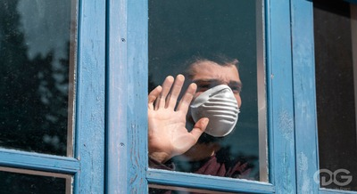
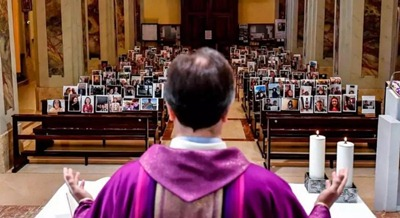
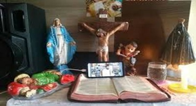

No ano de 2020, a população mundial foi pega de surpresa pela crescente proliferação do Covid-19 aonde se tornou um dos maiores desafios de sobrevivência da humanidade. O crescimento dessa pandemia ocasionou na mudança das atividades globais e forma de viver das pessoas.
Uma das medidas que foram tomadas para conter a proliferação do vírus foi o isolamento social, uma paralisação em grande parte das atividades de um país como paralisação dos torneios de futebol, cancelamento de show, fechamento de grande parte do comércio e impedimento de cerimônias ou reuniões religiosas.
Sabemos que ainda hoje o catolicismo é a religião mais predominante do mundo, no Brasil não é diferente. Devido ao avanço da pandemia as igrejas tiveram que fechar as portas para evitar a contaminação dos fieis, fazendo o uso da tecnologia para transmissão de suas missas ao vivo por meio da internet.
Pensando numa forma de trazer a interatividade para os membros da igreja católica por meio de uma plataforma que disponibiliza conteúdos religiosos e multimídia, foi que surgiu o Religare CNT.
